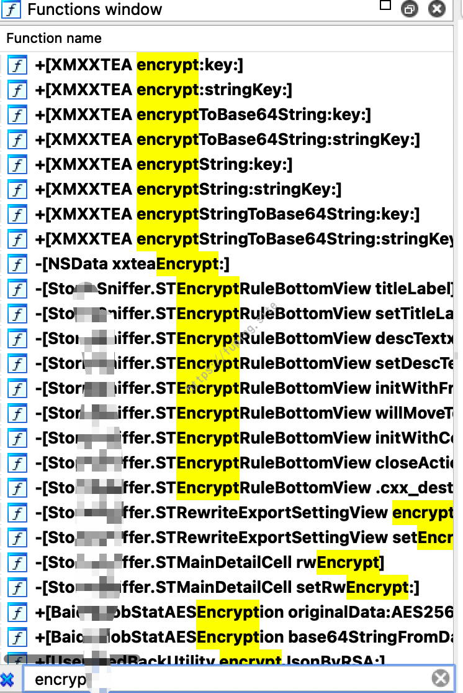
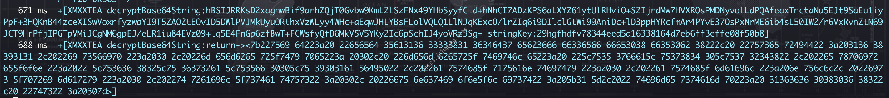
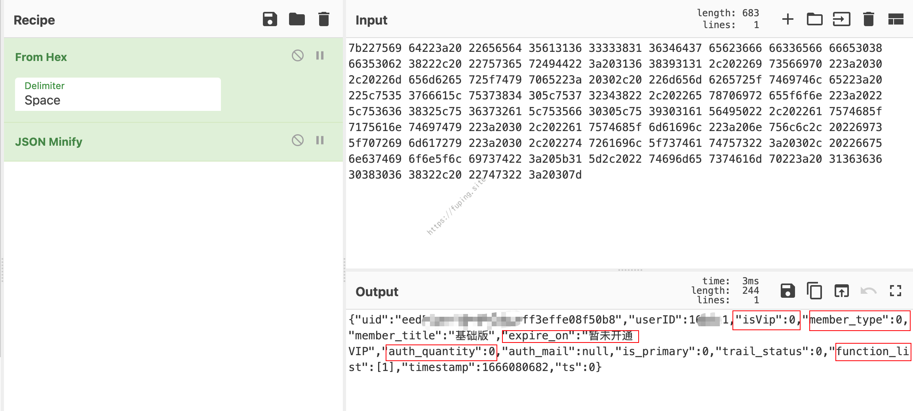
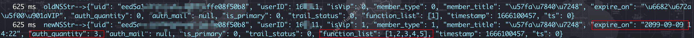
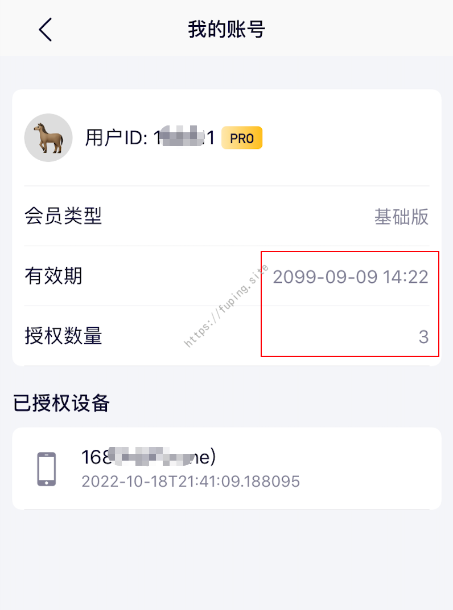
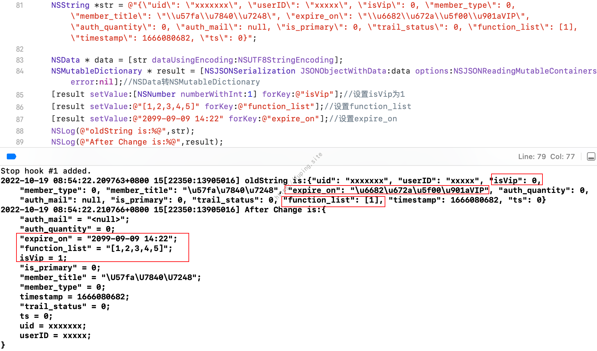
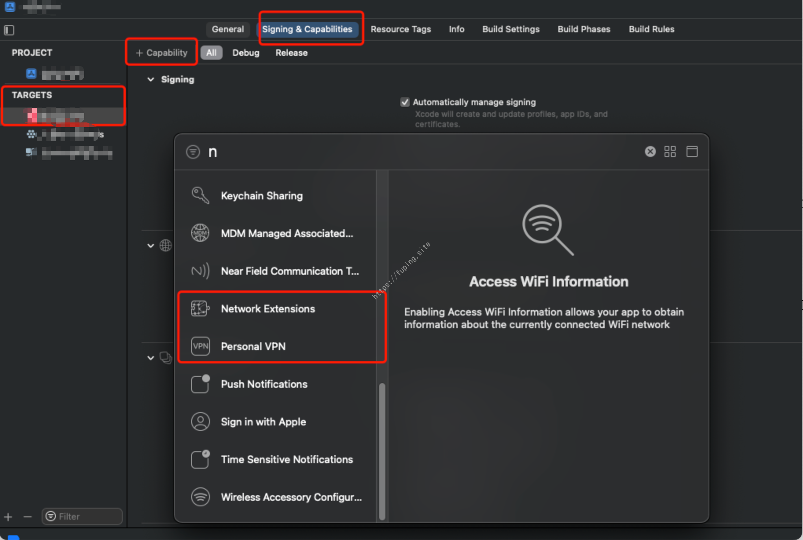

IOS逆向之某抓包APP
0x00 前言
本文的测试目标是一个抓包的APP，可以使用hook或者代理的方式来获取高级功能，如解密HTTPS流量、重写HTTP请求以及重放等功能。由于个人账户（没有付费成为苹果开发者账号）的限制，注入打包后，无法正常使用抓包功能，因此算是一篇半成品，不过本文主要提供一些思路以及介绍一下数据之间的转换。
0x01 分析
运行后发现高级功能都需要付费才可以，抓包发现请求和返回都加密了。
使用frida-ios-dump将ipa文件dump出来，之后用ida打开，发现该程序是用到了OC和swift。而且http请求采用了Alamofire，它是一个用 Swift 编写的 HTTP 网络库。
该程序较小，猜测加密函数中有encrypt关键字，于是在函数中搜索encrypt。
当然也可以根据http请求的一些内容搜索进而去定位加密的算法，在这里就不演示了。

可以看到有一些，可以使用frida-trace来追踪一下是调用了哪个方法。
1 | frida-trace -U -f com.xxxx -m "*[* *encrypt*]" |
使用该命令可以看到如下调用：
经过进一步验证发现是调用了类XMXXTEA相关的加密函数。一般这样同个类存在多个加（解）密，大多数都是简单的调用复杂的。从上图就可以看出来encryptStringToBase64String:arg1 stringKey:arg2调用了encryptToBase64String:arg1 stringKey:arg2。
所以我们看 +[XMXXTEA encryptStringToBase64String:arg1 stringKey:arg2]即可。
命令如下：
1 | frida-trace -U -f com.xxxx -m "+[XMXXTEA encryptStringToBase64String:stringKey:]" |
执行后可以发现与抓包的内容一致。
接下来我们看一下是否有数据的解密，同样搜decrypt
根据上面的经验，猜测解密的是+[XMXXTEA decryptBase64StringToString:stringKey:]。结果进行追踪后发现并没调用，这里解密采用的是+[XMXXTEA decryptBase64String:stringKey:]。
可以看到解密数据。

不过解密结果不是字符串类型，我们用CyberChef的hex解码后是json数据。

返回的json中有几个关键的键值可以猜出其含义。例如isVip应该是判断是否为会员，expire_on表示到期时间，auth_quantity是授权数量，function_list应该是拥有的功能，比如非会员用户只有一个抓包功能，如果要拥有解密HTTPS、重写等功能，则function_list应该是[1,2,3]。当然这些只是猜测。
尝试修改一下isVip的值为1，看是否有反应。首先看一下+[XMXXTEA decryptBase64String:stringKey:]解密返回值的类型是什么。
主要代码：
1 | onLeave(log, retval, state) { |
执行后返回的结果：
1 | ret type is -->NSConcreteData |
返回值是NSConcreteData类型的，可以看作为是NSData。修改返回值有两种方法，第一种是将NSData转化为NSString，然后利用字符串替换来修改，修改完毕后转化NSData并替换；第二种是将NSData转化为可变数组NSMutableDictionary，然后修改键的值，最后再转化NSData并替换。
下面分别看一下两种方法的OC代码，以及翻译成frida的js实现的代码。
方法一：使用NSString替换
对应的主要OC代码如下：
1 | NSString *str = @"{\"uid\": \"xxxxxxx\", \"userID\": \"xxxxx\", \"isVip\": 0, \"member_type\": 0, \"member_title\": \"\\u57fa\\u7840\\u7248\", \"expire_on\": \"\\u6682\\u672a\\u5f00\\u901aVIP\", \"auth_quantity\": 0, \"auth_mail\": null, \"is_primary\": 0, \"trail_status\": 0, \"function_list\": [1], \"timestamp\": 1666080682, \"ts\": 0}"; |
这里为了使用NSData数据，采用的是NSString转换而来的，当然也可以采用byte来生成。主要代码：
1 | Byte byte[] = {0x7B,..., 0x7D}; |
OC代码执行的结果如下：
可以成功替换，翻译成frida的js实现如下：
1 | onLeave(log, retval, state) { |
执行结果：
同时查看我的账号界面可以看到PRO标志。
但是点击解密HTTPS流量、重写等功能还是跳转到会员开通界面，这是因为这些功能是从function_list中获取的，所以想要解锁功能还需修改这里。主要代码：
1 | var newNSStr = oldNSStr.stringByReplacingOccurrencesOfString_withString_('"isVip": 0','"isVip": 1').stringByReplacingOccurrencesOfString_withString_('"is_vip": 0','"is_vip": 1').stringByReplacingOccurrencesOfString_withString_('"member_type": 0','"member_type": 1').stringByReplacingOccurrencesOfString_withString_('"auth_quantity": 0','"auth_quantity": 3').stringByReplacingOccurrencesOfString_withString_('"function_list": [1]','"function_list": [1,2,3,4,5]').stringByReplacingOccurrencesOfString_withString_('\\u6682\\u672a\\u5f00\\u901aVIP','2099-09-09 14:22'); |
再次执行

看到用户界面也成功变化了

高级功能也可以使用
例如重写功能，将请求的某度转到qq上

功能都是可以正常使用的。
方法二：使用NSMutableDictionary修改
对应的主要OC代码如下：
1 | NSData * data = [str dataUsingEncoding:NSUTF8StringEncoding]; |
查看执行的结果

这里翻译成frida的js实现时，有一个问题，生成NSMutableDictionary时，由于需要传入nil，而frida中无法生成，导致这种方法不能使用。根据别人提出的方法var nil=ObjC.Object(ptr("0x0"));，测试代码如下：
1 | var data = ObjC.classes.NSString.stringWithString_('{"aa":11,"bb":2}') ; |
运行后直接崩溃，导致无法使用，因此在frida下，暂时放弃第二种方法。
分析的话到这里就结束了，但借助frida来获取高级版，不方便使用，而且无法在非越狱手机上使用，如果想在非越狱手机上使用的话，就需要使用一些插件来运行在非越狱手机上。
0x02 编写非越狱插件
编写插件采用了非越狱插件开发集成神器MonkeyDev，集成了theos+Tweaks+Reveal.framework +Cycript +class-dump+CaptainHook。
安装和卸载可以参考https://github.com/AloneMonkey/MonkeyDev/wiki/%E5%AE%89%E8%A3%85
安装完成后新建MonkeyApp，File->New->Project->MonkeyApp。
项目建立后将砸壳后的APP拖入到TargetApp目录下。
这里使用Logos进行Hook代码，HOOK 某个类里面的某个对象方法语法：
1 | %hook 类名 |
根据上面的分析，这里我们需要对XMXXTEA 类的方法decryptBase64String:stringKey:进行HOOK，修改返回值，主要代码如下：
1 | %hook XMXXTEA |
其实和上面第二种方法中的OC代码一样，连接非越狱手机后使用⌘+R运行该项目。
首次在新设备上运行，需要设置-通用-描述文件与设备管理中信任证书，ios16以上需要开启开发者模式，隐私安全-开发者模式，而且需要重启。
运行后，高级版功能都可以打开，但是无法开启抓包功能。
因为开启抓包需要开通网络访问权限以及VPN的相关权限，由于账号没有付费成为苹果开发者账号，因此这些权限无法使用。
苹果开发者账号可用的权限：

非开发者账号可用的权限：
这里即使把权限添加上，也会编译不通过的。
这里就需要注册成开发者账号才可以继续进行，因此就放弃了。
0x03 总结
本文通过一款抓包APP借助于frida来获取高级权限，另外介绍了一下OC下NSData、NSString、NSMutableDictionary之间的数据转换，以及翻译成frida中js代码的实现。
其实也可以利用代理的方式，来修改返回包的内容，从而解锁会员功能。这里简单提供一下思路，可以借助第三方抓包软件（有重写功能的，手机上的也可以，如HTTP Catcher）。需要注意几点：一是每个设备加密key不一样，二是需要注意请求头中的t（时间戳），这个值与手机时间相差不能太多（可以修改手机时间）。大致流程就是首先获取加密算法的key，将请求头中的t、解密结果中的timestamp以及手机时间不要差太多，将修改后的数据加密后进行替换即可。或者自己搭建一个服务，将数据转发到自己服务上，解密修改后重新加密返回即可。